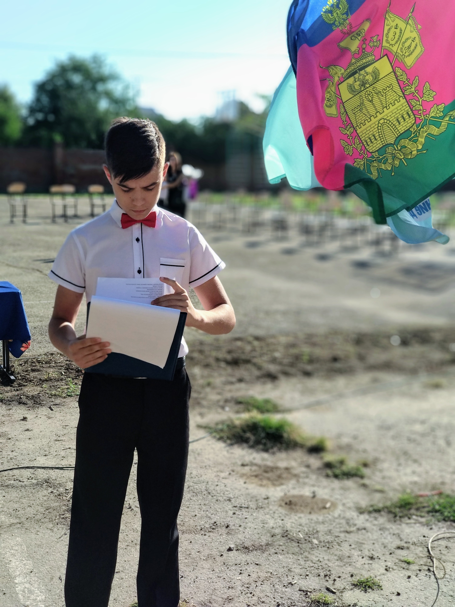

Интересные факты
Санкт-Петербург
После окончания 9 класса поступил в Питер, получалось учиться, замечательный город, пришлось вернуться по семейным обстоятельствам. Однако основную цель переезда я выполнил - выжить и завести полезные знакомства в незнакомом городе.
Профессия программиста
Вообще не интересовался данной профессией.
Школа
В школе был отличником, принимал участие везде. Меня все знали, вел линейки, большинство оценок ставили даже не смотря мне в лицо, так как знали что я Устин Варта.
Отношение к жизни
Каждый раз оказываясь не в своей тарелке, можно вырулить путем хитрости, это моя самая развитая черта.
